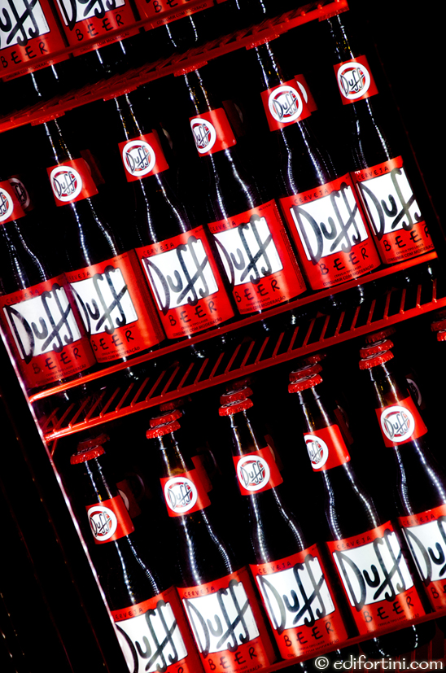
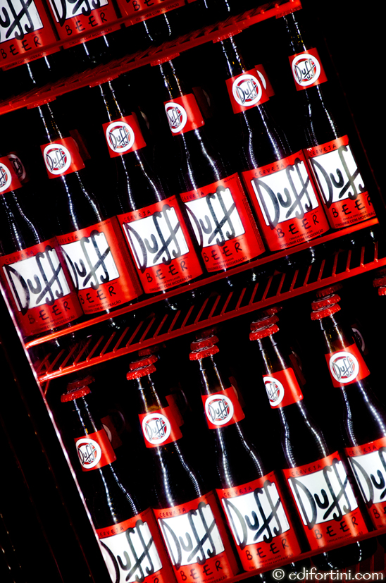
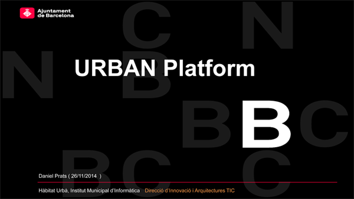
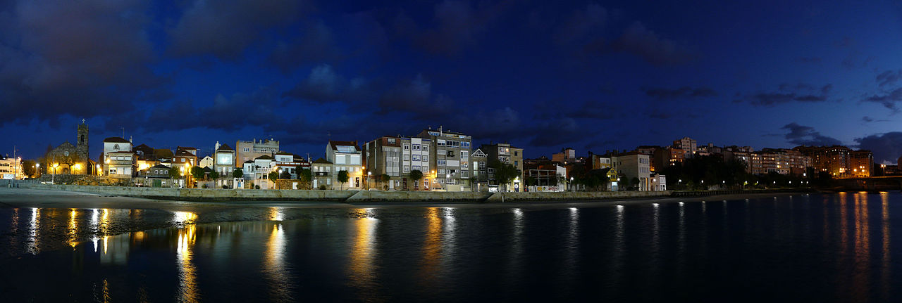
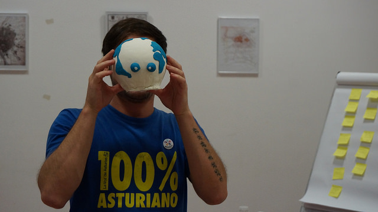

OSGeo-es y Geoinquietos
comunidades hispanohablantes geoespaciales


 



Santiago Higuera

- @santiagohiguera
- Profe de informática en @caminosupm
- Mi empresa es Mercatorlab
- Participo en:
- Escribo en:
Jorge Sanz
- Trabajo en CartoDB
- @xurxosanz
- Participo en:
- Escribo cuando puedo en:

OSGeo
Objetivo: Promover el software geo-espacial de código abierto
Graphics by @xurxosanz on bl.ocks.org/jsanz
OSGeo-es
Capítulo local de OSGeo para la comunidad hispanohablante

Los capítulos locales en OSGeo
- grupos de usuarios que comparten
- un área geográfica
- un mismo idioma
- dan un contexto más local a la fundación
- traducen documentos, software, sitios web
- promueven el FOSS4G y OSGeo
- de cualquier tamaño: para una ciudad o para un continente
¿Qué es OSGeo-es?
- empezamos en 2007,
tras las 1as Jornadas de SIG Libre de Girona - mismos objetivos que la Fundación
pero enfocados a la comunidad hispanohablante- promover el software libre geoespacial
- apoyar usuarios
- ...
- capitulo oficial desde noviembre de 2008
Algunos números de OSGeo-es
- Unos 498 participantes (lista de correo)
- Unos 8.000 correos en 2404 hilos
- En la categoría Geoinquietos: 17200 mensajes en 8150 hilos
- 87 miembros
- 48 miembros con derecho a voto
- Hemos participado en unos 50 eventos
Consejo de dirección


Qué hacemos en OSGeo-es
- damos soporte en español
a cualquier duda sobre geomática libre - promocionamos la geomática libre donde nos dejan
- promovemos traducciones de software, artículos,...
Traducción de OSGeo Live
Proyecto de colaboración entre más de 100 desarrolladores, empaquetadores, traductores y testers de todo el mundo.
Libro libre de SIG
- http://wiki.osgeo.org/wiki/Libro_SIG
- Proyecto liderado por Víctor Olaya (SEXTANTE)
- Licencia Creative Commons Atribución (CC-BY)
- Disponible para descarga o compra en papel
- Fuentes en LaTeX disponibles el SVN de OSGeo
- Revisión colaborativa
- Casi 900 páginas en dos tomos

Panorama SIG Libre
Estado del arte del Free and Open Source Software For Geomatic
Cómo contactar con nosotros
- Lista de correo:
http://lists.osgeo.org/mailman/listinfo/spanish - Canal de discusión de IRC:
#osgeoes en irc.freenode.net - Twitter: @osgeoes
- Wiki: es.osgeo.org
- Blog: osgeoes.wordpress.com
geoinquietos
¿qué es eso?
Definición
Grupos de gente a nivel local con ganas de compartir inquietudes y experiencias en SIG

El aprendizaje no es una actividad, es una actitud. Dejar la zona de comfort es lo que nos ayuda a crecer
Raf Roset (geoinquieto)
¿Dónde nacen los geoinquietos?
y después llegaron...
Grupos de Geoinquietos en España
Galicia, Cantabria, Barcelona, Madrid, Valencia, Sevilla, Córdoba, Almería, Tenerife
Países con Grupos de Geoinquetos
Buenos Aires (Argentina), Galápagos (Ecuador), Mexico, Nicaragua, España
Lista de correo
- Eje central de comunicación y coordinación
- Transparencia
- Todo se discute por la lista
- Sirve de archivo
Listas de correo Geoinquietos
http://osgeo-org.1560.x6.nabble.com/Geoinquietos-f4574720.htmlRegla del 90/9/1
- 90% no dirán nada (lurkers)
- 9% serán activos
- 1% serán líderes
¿Cómo llamar la atención?
Con contenidos interesantes
Cursos y talleres
Charlas
Conferencias
Mapping parties
Actividades lúdicas
Geoinquietos Sevilla
Presentación Geocamp ES Sevilla, junio 2015
| @GeoinquietosSVQ |
Geoinquietos Madrid
Cartel 'Election maps', octubre 2015
Geoinquietos Córdoba
10ª reunión Geoinquietos Córdoba, septiembre 2015
Geoinquiets Barcelona
35a Geoinquiets, 26 de novembre de 2014: Urban Data
Geoinquietos Valencia
Cartel para Geobirras, septiembre 2015
Xeoinquedos Galicia
Banner de Xeoinquedos blog
Geoinquietos Almería
Cartel HackLab Almería, 2015
Geoinquietos Tenerife
Banner blog Geoinquietos Tenerife, 2015
Geoinquietos Cantabria
Taller de JOSM, enero 2012
Geocampes
Geocamp ES nació en 2013 como resultado de la participación en Geocamp 2012
organizada por OSGEO-PT en Campo Maior, Portugal.
Se ha convertido en el evento a nivel nacional de Geoinquietos en España
Geocampes 2013
Geocampes 2013 VIGO
Geocampes 2014 A Coruña
Geocampes 2015 Sevilla
|  | ||
¿Y en 2016 qué?
- Jornadas SIG Libre, Girona, marzo 2016
- Geocamp-es, ? , junio 2016
- Mappings, cursos, jornadas,...
Lo más importante es:
Reunirse
Desvirtualizarse
Divertirse
Pero sobre todo...
Aprender
¡Muchas Gracias!
OSGeo-es y Geoinquietos
comunidades hispanohablantes geoespaciales
Referencias
{kind=link}

Esta obra está bajo una Licencia Creative Commons Atribución-NoComercial-CompartirIgual 3.0 Unported.
Enlace a la presentación:
http://mercatorlab.com/geoinquietos/electionmaps